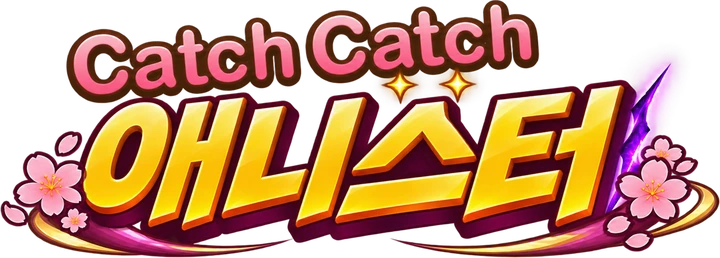
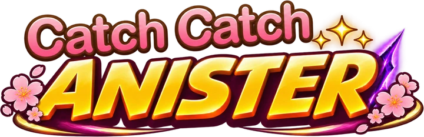
흩어진 애니스터를 찾아서
In Search of the Scattered Anisters
내가 잡은 애니스터로 대결하는 손맛 배틀 게임
A punchy battle game where you fight with the Anisters you catch.
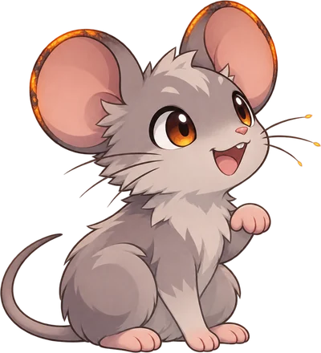
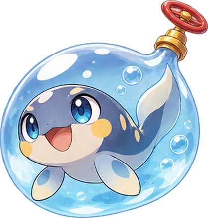
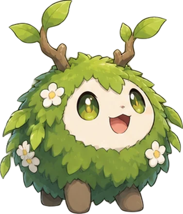
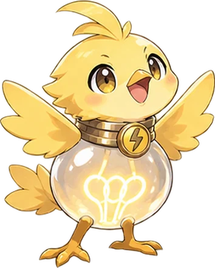
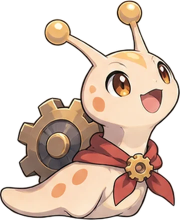
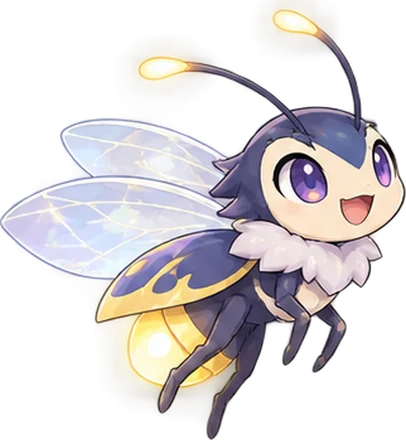
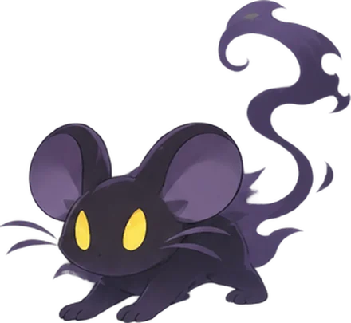
짧고 쉽게, 그래도 손맛은 확실하게.
Quick and easy to pick up, with plenty of punch.
1:1로 이어지는 배틀. 연타와 미니게임을 잘할수록 더 세게 공격해요.
One-on-one battles in a row. The better you tap and play the mini-games, the harder you hit.
배틀에서 이긴 애니스터를 잡아 내 덱에 넣어요. 센 애니스터를 잡을수록 더 센 상대에게 도전할 수 있어요.
Win a battle, catch the Anister and add it to your deck. The stronger your catches, the tougher the rivals you can challenge.
지역을 하나씩 열며 스테이지를 깨고, 지역 보스에 도전해요.
Open new areas one by one, clear the stages and take on each area's boss.
다른 플레이어의 덱과 대결하고 주간 랭킹에 도전해요.
Take on other players' decks and climb the weekly rankings.
불·물·풀·전기·땅·빛·어둠. 서로 강하고 약한 상성을 살펴 덱을 짜 보세요.
Fire, Water, Grass, Electric, Ground, Light and Dark. Use type matchups to build your deck.
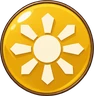
반딧불이Twinklebug빛 속성 · 밤에 떼 지어 날면 길이 보인다.Light · When lots of them fly together at night, they light the path like tiny stars.균열 발전소 깊은 곳에 잠든 일곱 왕. 끝까지 모험한 사람만 만날 수 있어요.
Seven kings sleep deep inside the Rift power plant. Only true adventurers will meet them.
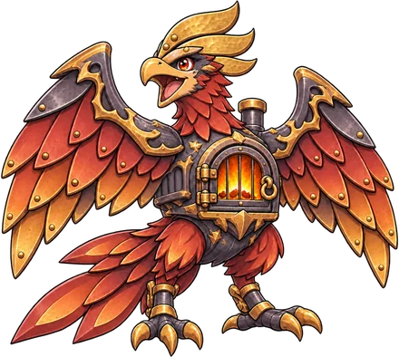
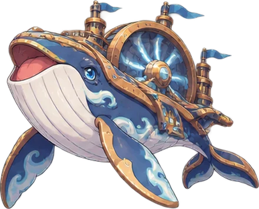
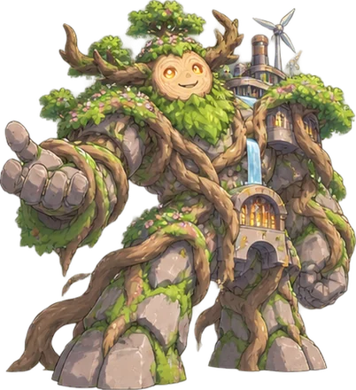
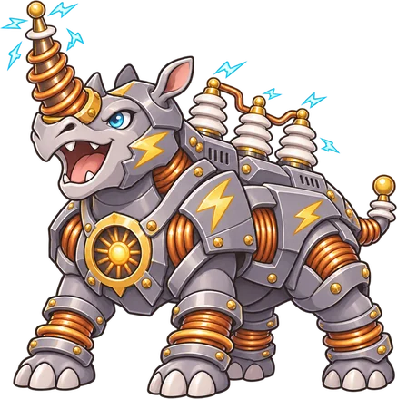
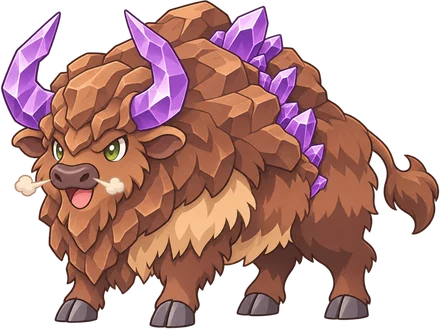
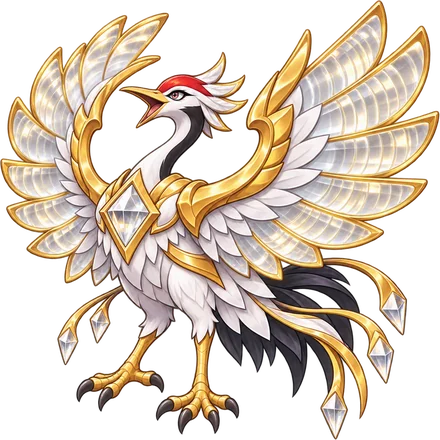
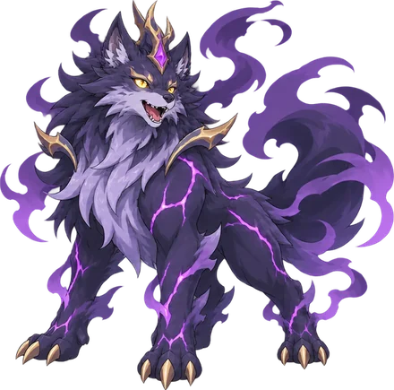
크리에이티브앤시드는 누구나 쉽게 즐길 수 있는 모바일 게임을 만드는 회사입니다. 첫 작품은 「캐치캐치 애니스터」입니다.
Creative & Seed makes mobile games that anyone can enjoy. Our first title is "Catch Catch Anister".
게임 이용 문의, 계정·개인정보 관련 요청은 이메일로 보내 주세요. 게임 이름과 사용 기기(Android/iPhone)를 함께 적어 주시면 빠르게 도와드릴 수 있습니다.
For game support or account and privacy requests, please email us with your in-game name and device type (Android/iPhone).
cankel@daum.net